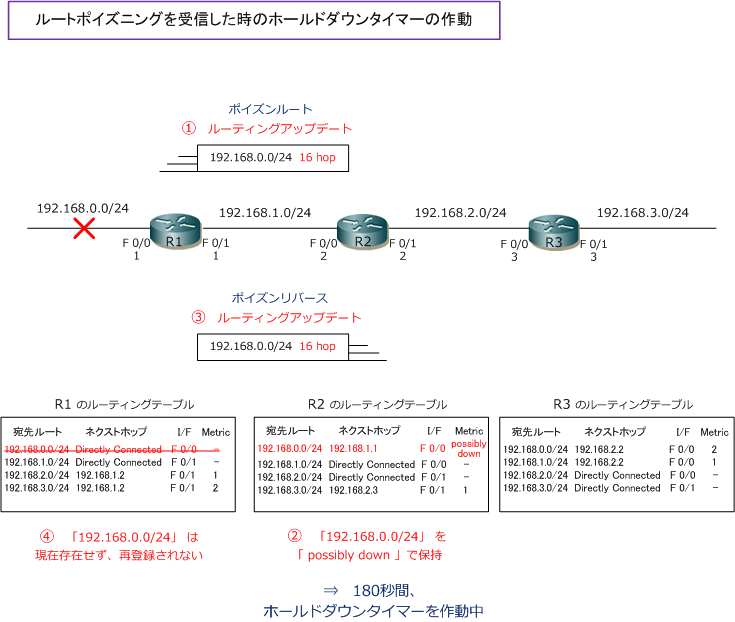
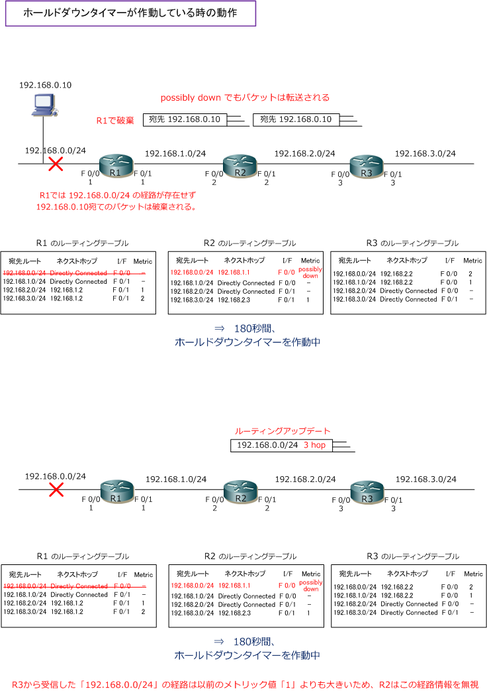
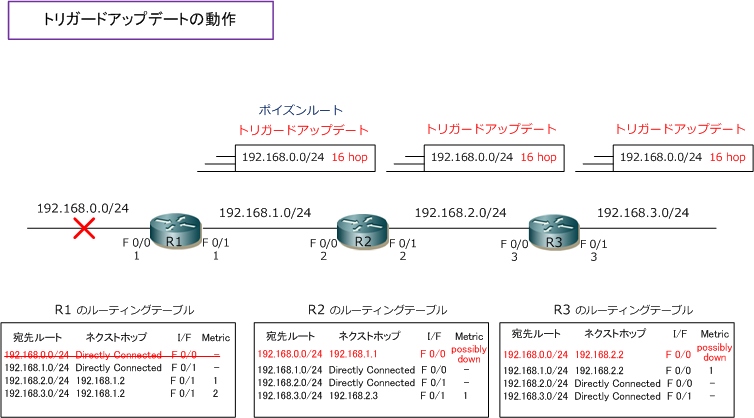
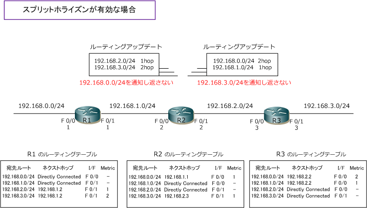
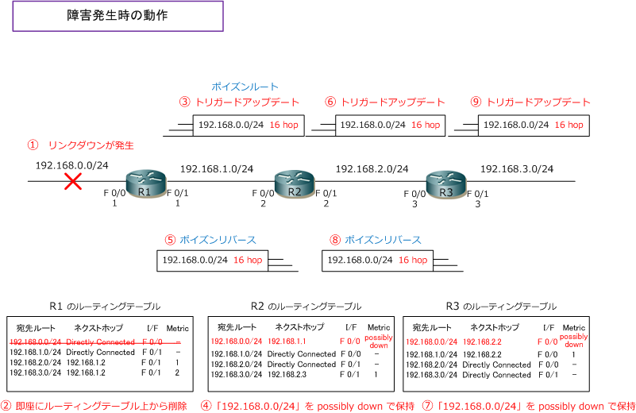

Distance Vector Routing - Part 4
ホールドダウンタイマー
ホールドダウンタイマーとは、ある経路情報がダウンした事を示すアップデートを受信した時、その経路情報 を誤って再登録しないように、その経路情報がダウンしたことを全てのルータが認識できるようにするための 待ち時間のことです。ホールドタイマーは、ルートポイズニングによる到達不能な経路情報（メトリック 16） を受信した時、または一定時間（180秒）を過ぎても隣接ルータから経路が通知されない時に作動し始めます。 ※ 一定時間を過ぎても隣接ルータから経路情報が通知されない時とは、無効タイマー（Invalid Timer）が180秒を経過した時のこと。
下図では?@のルートポイズニングを受信したR2は [ 192.168.0.0/24] の経路を [ possibly down ] としますが このpossibly downがホールドダウンタイマーの作動を意味します。180秒はpossibly downとして保持します。

経路情報が [ possibly down ] となっている時の動作は3点理解しましょう。１点目は、possibly down でも [ 192.168.0.0/24 ] 宛てのパケットは通常通りルーティングされるという事です。2点目は possibly down の 状態では隣接ルータから [ 192.168.0.0/24 ] の経路情報を受信しても、以前と同じメトリック値の経路情報か 以前よりも大きなメトリック値の経路情報は破棄します。3点目は以前よりも小さいメトリック値の経路情報を 受信すれば最適なルートと判断し、ホールドダウンタイマーを停止してルーティングテーブルに登録します。

このホールドダウンタイマーは以前よりもメトリック値の低い経路情報として受信した場合に停止されるか、 タイマー作動時間である180秒後にも停止します。あるいはフラッシュタイマーが停止した時にも停止します。
トリガードアップデート
トリガードアップデートは、定期的なアップデートとは別にネットワーク状態(メトリック値)に変化があると すぐに送信されるアップデート。このトリガードアップデートではルーティングテーブル全体ではなく変更の あった経路だけをアップデートします。下図では[ 192.168.0.0/24 ] のリンクダウンが発生したことからルート ポイズニングを直ちにトリガードアップデートとして送信します。トリガードアップデートで送られる場合は 状態変化のあった [ 192.168.0.0/24 ] だけが即座にアップデートされます。そして、その経路情報を受信した R2では、状態変化のあった [ 192.168.0.0/24 ] だけをトリガードアップデートとして直ちにR3に送信します。

上図では、ルートポイズニングを受信した後に返送されるポイズンリバース動作やホールドダウンタイマー動作の説明を省略します。
今まで紹介したRIPの5つの機能のおさらい ( 総集編 )
正常な状態では、30秒ごとの定期的なルーティングアップデートで以下の内容のアップデートが行われます。 ここではR2のアップデート内容だけに着目してみます。R2ではスプリットホライズンが有効なので、R1から 受け取った経路情報をR1に送り返したり、R3から受け取った経路情報をR3に送り返す無駄なことはしません。

次に障害発生時のトラフィックフローを見てみましょう。下図の?@から?Eの障害内容を説明していきます。

?@ 「192.168.0.0/24」のインターフェースでリンクダウンが発生します。
?A R1は即座にルーティングテーブルから「192.168.0.0/24」の経路情報を削除します。
?B R1は [ 192.168.0.0/24 ] がダウンした事を通知するためにメトリック値を最大16にして経路を通知します。 （ルートポイズニング）。また、R1はネットワーク状態(メトリック値の状態)に変化があったことから、R1は 状態変化のあった[ 192.168.0.0/24 ]の経路だけ即座に隣接ルータに通知します（トリガードアップデート）。
?C R2は[ 192.168.0.0/24 16hop ]という経路情報がダウンしたことを示すアップデートを受信したので、R2 のルーティングテーブルで 192.168.0.0/24 の経路をpossibly downとしてホールダウンタイマーを作動します。
?D R2は[ 192.168.0.0/24 16hop] の到達不能な経路情報を受信したので、受信した経路情報のメトリック値 を最大値 16 にして、その経路を同じインターフェースから隣接ルータに送り返します（ポイズンリバース）。
?E R2は [ 192.168.0.0/24 16hop ] の到達不能な経路情報を受信したので、ネットワーク状態（メトリック 値の状態）に変化があったことから、R1は状態変化のあった [ 192.168.0.0/24 ] の経路だけ即座に通知します。 (トリガードアップデート)。なお、?Fから?Hの流れは、?Cから?Eの流れと全く同じ考え方で動作します。